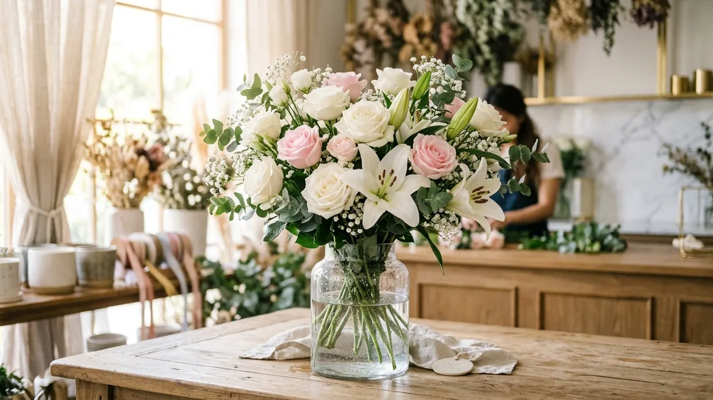

Panduan Merawat Buket Bunga Segar Agar Tahan Lama

Ringkasan Cepat:
Agar bunga segar tidak cepat layu: (1) Buka wrapping dan potong ujung tangkai miring 45 derajat, (2) Pindahkan ke vas dengan air bersih, (3) Ganti air vas setiap hari, (4) Hindari sinar matahari langsung, dan (5) Jauhkan dari buah-buahan matang. Perawatan ini menjaga bunga tetap segar hingga 7-10 hari.
Mendapat kiriman bunga segar dari orang tersayang tentu sangat membahagiakan. Misalnya saja Classic Rose Bouquet dari THE QUEEN BOUQUET. Namun, bunga yang telah dipotong memiliki umur simpan yang terbatas. Jangan khawatir, ikuti panduan berikut agar keindahan bunga Anda bertahan lebih lama.
Langkah-Langkah Merawat Bunga Segar
- Lepaskan Wrapping dengan Hati-Hati: Meskipun wrapping (pembungkus kertas) terlihat indah, bunga butuh ruang untuk bernapas. Lepaskan pelan-pelan agar tangkai tidak patah.
- Potong Tangkai 45 Derajat: Gunakan gunting yang tajam (atau pisau) untuk memotong pangkal tangkai sekitar 2 cm dengan kemiringan 45 derajat. Ini memperluas area serapan air.
- Siapkan Vas dan Air Bersih: Bersihkan vas secara menyeluruh. Isi dengan air bersih bersuhu ruangan. Pastikan tidak ada daun yang terendam air karena akan membusuk dan memicu bakteri.
- Ganti Air Setiap Hari: Air yang kotor adalah musuh utama bunga segar. Kosongkan vas, cuci, dan isi dengan air baru setiap harinya.
- Penempatan yang Benar: Simpan vas bunga di tempat yang sejuk. Hindari sinar matahari langsung (seperti jendela), panas dari AC/elektronik, dan jauhkan dari buah-buahan (gas etilen dari buah mempercepat layu).
Solusi Bunga yang Tahan Selamanya
Jika Anda tidak punya banyak waktu untuk melakukan perawatan air harian, Anda mungkin ingin mempertimbangkan Buket Artifisial (Rp101.000) atau Buket Kawat Bulu (Rp25.000) di pesanan Anda berikutnya. Keduanya awet selamanya tanpa perawatan khusus!